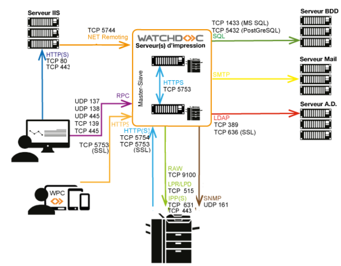

Watchdoc - Architecture réseau
Schéma des ports réseaux

Matrice des flux réseaux
Les ports réseau à ouvrir pour permettre le fonctionnement sont les suivants :
| Source | Port | Protocole | Cible |
| Périphérique d'impression | TCP 5754 TCP 5753 |
HTTP HTTPS |
Service Watchdoc (kernel) |
|
Site web Watchdoc (IIS) |
TCP 57441 v. antérieures à la v. 6.1.1 |
protocole MS .NET Remoting | Service Watchdoc (kernel) |
|
Site web Watchdoc (IIS) |
TCP 5744 à partir de v. 6.1.1.x |
HTTPS | Service Watchdoc (kernel) |
| Navigateur : interfaces web | TCP 80 ou TCP 443 |
HTTP HTTPS |
Site web Watchdoc (IIS) |
| Service Watchdoc | TCP 1433 | SQL | Serveur SGBD Microsoft SQL® |
| Service Watchdoc | TCP 5432 | SQL | PostgreSQL |
| Service Watchdoc | ICMP | périphérique d'impression | |
| Service Watchdoc | UDP 161 UDP 1622 |
SNMP | périphérique d'impression |
| Service Watchdoc |
TCP 9100 TCP 515 TCP 631 ou 443 |
RAW LPD IPPS |
périphérique d'impression |
| Service Watchdoc | TCP 389
TCP 636 |
Protocole LDAP SSL | Serveur annuaire utilisateurs |
| Service Watchdoc ou poste de travail |
TCP 5756 (SSL) |
HTTPS |
Watchdoc Supervision Console (WSC) |
| Watchdoc Notification Serveur® | TCP 445 | SMB | Poste utilisateur |
| Watchdoc | TCP 5751 | Watchdoc Notification | |
| Watchdoc Client for... | TCP 5753 | HTTPS | Serveur d'impression & serveur maître Watchdoc |
1 Par souci de sécurité, Doxense déconseille la configuration en mode déporté nécessitant l'ouverture du port 5744 avec les protocole .NET Remoting (versions antérieures à la v. 6.1.1).
En conséquence, ce port est automatiquement bloqué dans le pare-feul lors de l'installation de Watchdoc à partir de la v. 6.1.0.5221.
Pour les versions comprises entre la v. 6.1.0.5221 et 6.1.0.5318, si le serveur web IIS est déporté, il est donc nécessaire de modifier les règles du pare-feu pour permettre au serveur IIS distant d'accéder à Watchdoc (cf. Configurer le port 5744).
2 Watchdoc ne gère pas les traps SNMP.
Matrice des flux WES
Les ports réseau à ouvrir pour permettre le fonctionnement des WES sont les suivants :
| Marque | Source | Port | Protocole | Cible |
| Canon | Service Watchdoc | TCP 8000 TCP 8443 |
HTTP HTTPS |
Périphérique d'impression |
| Epson | Service Watchdoc
pour l'authentification, port sécurisé obligatoire |
TCP 80 |
HTTP |
Périphérique d'impression |
| Hewlett-Packard | Service Watchdoc |
TCP 57627 TCP 7627 |
HTTP HTTPS |
Périphérique d'impression (secure obligatoire pour authentification) |
| Kyocera | Service Watchdoc |
TCP 8080 |
HTTP HTTPS |
Périphérique d'impression |
| Lexmark | Service Watchdoc | TCP 80 TCP 443 |
HTTP HTTPS |
Périphérique d'impression |
| Toshiba Open Platform | Service Watchdoc | TCP 49629 TCP 49630 |
HTTP HTTPS |
Périphérique d'impression |
| Toshiba OEM Lexmark |
Service Watchdoc | TCP 49629 TCP 49630 |
HTTP HTTPS |
Périphérique d'impression |
| Ricoh | Service Watchdoc | TCP 80 TCP 443 |
HTTP HTTPS |
Périphérique d'impression |
| Sharp OEM Lexmark | Service Watchdoc | TCP 80 TCP 443 |
HTTP HTTPS |
Périphérique d'impression |
| Xerox SNMP requis pour l'installation |
Service Watchdoc comptabilisation (jba) pour l'authentification, port sécurisée obligatoire |
TCP 80 |
HTTP
|
Périphérique d'impression |
Les ports réseau à ouvrir pour permettre le fonctionnement du WES Konica Minolta sont les suivants :
| Marque | Source | Port | Protocole |
|
|---|---|---|---|---|
| Konica Minolta | Watchdoc | 80 | Non-SSL WebDAV |
|
| Watchdoc | 50003 | https |
|
|
| Watchdoc | 50001 | http |
|
|
| Watchdoc | 59158 | OpenAPI |
|
|
| Watchdoc | 59159 | OpenAPI |
|
|
| Watchdoc | 59160 | OpenAPI |
|
|
|
|
5753 | https | Watchdoc | |
|
|
5754 | http | Watchdoc |
Matrice des flux interserveur
Les ports réseau à ouvrir pour activer l'impression interserveur sont les suivants :
| Source | Port | Protocole | Cible |
|
Serveur du domaine (slave) |
TCP 5753
|
HTTPS SSL |
Serveur du domaine (slave) |
|
Service Watchdoc |
9100 631 ou 80 443 |
RAW IPPS |
Périphériques d'impression |